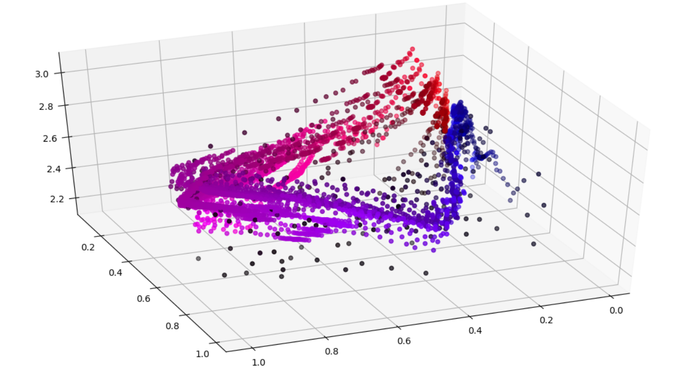

About Me
I am a 1st year PhD student at University of Southern California studying Machine Learning and Data Science. I graduated from The Ohio State University with a double major in Computer Science and Mathematics. I have previously done research in pure math, primarily in finite combinatorics. Currently, most of my research focuses on marrying the statistically grounded methods from machine learning with the impressive representational power of deep neural networks.
Research
The essence of my research direction as it currently stands is to make sense of the amazing power of deep neural networks. I am approaching this problem from a variety of different perspectives including interpretability, information theory, dynamical systems, generalizability, and statistical validity. My research statement and current directions can be viewed here. Some of my latest projects can be viewed here.
